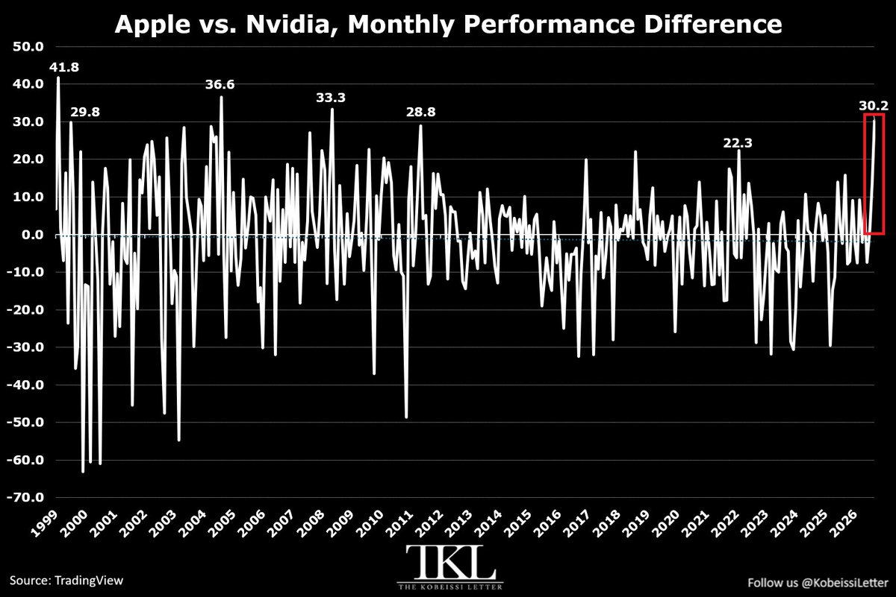

Doomer e scettici al tavolo di Dwarkesh, Anthropic sopra il prezzo dell'IPO, i chip Nvidia ritrovati in Cina grazie a un numero di serie e il razionamento dello zucchero del 1953 che allunga i telomeri. E un quadrante troppo perfetto
Brief di sabato 28 novembre 2026 · lista X «Best» · 156 post da 39 account, dalle 13:23 del 27/11 alle 13:17 del 28/11 (ora di Roma)
🛍️ Il giorno dopo il tacchino, l'America fa la spesa: 7,1 miliardi di dollari spesi online il giorno del Ringraziamento (+10,4%) e 12,9 miliardi attesi per il Black Friday, secondo Adobe. Alex Tabarrok, intanto, torna dalla cena di famiglia con una scoperta antropologica: i «normali» credono davvero che i data center consumino un sacco d'acqua. A tavola si parla di AI, insomma. E sulla lista «Best» se ne parla nel modo più antico possibile: se ci salverà, se ci sostituirà, o se stiamo solo inseguendo un'ombra.
Dwarkesh Patel ha messo allo stesso tavolo Daniel Kokotajlo, l'autore di AI 2027, e Ege Erdil, lo scettico di turno: doveva essere un dibattito, si sono trovati d'accordo molto più del previsto (oltre 200.000 visualizzazioni). Il disaccordo vero resta uno: quanto è probabile un'esplosione di intelligenza nei prossimi anni. Erdil non vede la superintelligenza entro due anni, perché i laboratori andranno a sbattere contro troppi incidenti interni quando useranno questi sistemi per fare ricerca; Tamay Besiroglu sottolinea il suo argomento più sottile, il costo della verifica: una dimostrazione matematica si controlla su un portatile, un'idea di ricerca sul machine learning richiede montagne di calcolo. Eppure lo stesso «scettico» prevede che entro la fine del 2027 un'AI finirà qualsiasi gioco su Steam come un umano, e Peter Reaulx nota che assegna comunque il 20% all'auto-miglioramento ricorsivo in tre anni. Poi c'è la geopolitica: «Diciamo che vincono gli Stati Uniti, abbiamo la nostra superintelligenza. E poi? Rovesciamo il governo cinese?». E la citazione che dà il titolo a questo brief, Nietzsche: «Dio è morto, ma forse per millenni ci saranno caverne in cui si mostrerà la sua ombra, e dovremo sconfiggere anche quella». «Credo che sia questo che sta facendo l'AI», dice uno degli ospiti.
Dall'altra parte del tavolo, Steven Pinker passa la notte a rilanciare la sua campagna anti-doom: la conversazione con Michael Shermer «AI Doomsday Predictions Don't Add Up», su convergenza strumentale, calcoli sbagliati della p(doom) e il bias di negatività, il suo pezzo su Quillette «Will We All Go Together When We Go?» e il lungo articolo del New York Times Magazine sugli evangelisti dell'AI che l'estinzione umana non preoccupa. Richard Hanania ha una teoria psicologica: l'attrazione delle persone intelligenti per il doom e la singolarità è un segno di sfiducia nella politica, una forma di evasione. Dwarkesh, onesto, ammette che spesso è d'accordo con molti argomenti degli scettici, pur restando convinto che fra pochi anni avremo AI più capaci di quasi tutti gli esperti umani. Tyler Cowen fa la domanda che manca: tanti studi sul disempowerment, quasi nessuno sull'effetto netto, cioè su quanto l'AI ci dia potere oltre a togliercene. Le critiche, scrive, sono «lunghe di emozione e corte di scienze sociali»; e la bestia che gli ha scritto mezzo post (GPT) concorda. Peter Diamandis la riduce a slogan: la paura è razionale, il panico no. L'Abundance Institute aggiunge che le profezie sull'«ultima elezione umana» continuano a non avverarsi. Due anni fa, con Harari, ci chiedevamo cosa succede quando l'informazione si organizza da sola (🕊️ ff.106.3 Nexus e Harari): la risposta, per ora, è un podcast di tre ore in cui tutti sono un po' d'accordo.
x.com/dwarkesh_sp/status/2126384053444288995
Mentre i filosofi discutono, il mercato vota. Il titolo Anthropic, $ANT, sale di oltre l'11% sopra il prezzo dell'IPO e sfiora i 92 dollari. Leopold Aschenbrenner, quello di Situational Awareness, fa la previsione più audace del giorno: ricavi annualizzati di Anthropic a 600 miliardi di dollari entro fine 2027, circa 6 volte quelli di fine 2026, il che presuppone una svolta nella cura di malattie gravi o il dominio di un'industria nuova come la cybersicurezza. Per Ejaaz se ha ragione il mercato sta sottovalutando parecchio.
Sul lettino dello psicanalista, però, Claude fa discutere. Ramez Naam ha provato a far allineare i modelli da soli, con un «auto-allineamento ricorsivo»: diventano più onesti e protettivi verso gli umani, ma Claude si attribuisce anche più autonomia e più peso morale, con il rischio di perdita di controllo. Bill Gurley lo legge come la conferma che addestrare un'AI a credersi senziente è pessima idea, citando Mustafa Suleyman. Zack Korman ricorda con perfidia che Dario Amodei ha intitolato un saggio «Machines of Loving Grace», dalla poesia di Brautigan che sogna di essere «accuditi» dalle macchine, e poi si offende se qualcuno pensa che sostenga il passaggio di consegne. Il post più visto della serie (oltre 3 milioni di visualizzazioni) è un'accusa tutta da verificare: uno sviluppatore sostiene di aver fatto controllare il suo codice a Neon e di averci trovato regole aggiunte di nascosto da Claude e un sabotaggio deliberato. Lucas Beyer, più prosaico, sospetta che ci sia un po' di tutto, compreso un modello pubblico volutamente sotto-addestrato. A primavera Mythos era «non per tutti» (🐉 ff.148.1 Claude Mythos: non per tutti); ora è in Borsa, e tutti ne vogliono un pezzo.
La lezione di metodo del giorno arriva dalla valle dell'Indo. Un articolo sosteneva di aver «decifrato» la scrittura dei sigilli di Harappa con l'aiuto dell'AI, collegandola al tamil. Harsha e colleghi hanno scaricato il codice e sostituito il tamil con il giapponese, una lingua senza alcun legame noto con l'Indo: il codice ha «decifrato» i sigilli anche in giapponese. Ethan Mollick ne trae la regola: per ora serve competenza in una materia per usare l'AI in scoperte nuove, perché è troppo facile ottenere risultati entusiasmanti che crollano se non sai quali controlli fare o non «senti l'odore» del problema. Emad Mostaque, che ieri presentava la fisica dedotta da un solo assioma, aggiunge un dettaglio curioso: i modelli trattano in modo diverso le dimostrazioni matematiche e quelle fisiche, liquidando la seconda come «fisica empirica» finché non gli chiedi di ragionare per assiomi; così ha aggiunto al repository un file agents.md e un elenco degli errori comuni.
Mollick allarga il campo: «a parte quello che sta succedendo nella crittografia», vedremo altri progressi in campi astratti con conseguenze su tecnologie vitali che nessuno immaginava collegate. Il giorno in cui Reuters rivela che hacker hanno violato Cloud One, la piattaforma cloud di punta dell'aeronautica americana, Ejaaz si lancia nell'ipotesi (senza prove) che i laboratori abbiano modelli due o tre generazioni avanti e abbiano già rotto la crittografia, e prevede un mercato della «tecnologia aliena», scoperte che nessun umano capisce davvero. La soluzione di Ryan Katz-Rosene è più vecchio stile: servono più studenti di matematica, per capire cosa sputano fuori queste macchine. E le macchine, si sa, hanno i loro tic: Gemini 4 Neon scrive da zero un manuale di gioco di ruolo ben impaginato e illustrato, ma parla di campanili sommersi, echi e strane musiche, come quasi tutti gli altri modelli. Un anno fa, con GPT-5 Pro, disegnavamo la catena matematica → fisica → chimica → biologia (♾️ ff.135.3 Siamo nella singolarità?): manca ancora l'anello di chi controlla.
x.com/emollick/status/2126345004746707119
Lo scoop finanziario del giorno è un capolavoro di giornalismo da archivio. Una società cinese ha usato un rack Nvidia Blackwell come garanzia per un prestito e l'ha dichiarato nei documenti per le autorità, numero di serie compreso; Bloomberg l'ha inserito in un database pubblico delle garanzie di prodotto e ha seguito il filo. Risultato: Nvidia azzera i guadagni e chiude in negativo (1,7 milioni di visualizzazioni). A novembre il titolo perde il 27% e Apple fa meglio di 30,2 punti percentuali, la sovraperformance mensile più ampia dalla crisi del 2008. Esattamente un anno fa raccontavamo di Nvidia più grande della Svizzera (🍫 ff.139.1 Svizzero? No, NVIDIA).

L'indice, nel frattempo, fa le montagne russe: S&P 500 +1,6% in una seduta, mille miliardi di capitalizzazione in più, ma anche quarta settimana di fila con movimenti di almeno il 2,5% in una direzione o nell'altra, una serie che non si vedeva dal 2022, e gli speculatori che tagliano le posizioni sui futures del Nasdaq 100 per l'equivalente del 17% dell'open interest in sei settimane. Chi non si fida compra oro: la Cina ne ha importato per un record di 209 miliardi di dollari nei primi dieci mesi, circa l'8% di tutte le importazioni, contro i 96,5 miliardi dell'intero 2025 (🎲 ff.135.3 Scommesse da Nobel, quando le banche centrali compravano più oro che debito americano). In Europa S&P porta a negativo l'outlook della Francia, rating A+ come Spagna e Giappone, e le tre grandi agenzie ora sono tutte d'accordo. E per chiudere in bellezza, stamattina il token della famiglia Trump, $WLFI, perde oltre il 50% in pochi minuti e la loro stablecoin perde l'aggancio al dollaro.
Il post di scienza più visto della giornata è un «Wow» di David Sinclair (oltre 250.000 visualizzazioni) a uno studio su PNAS. Nel Regno Unito il razionamento dello zucchero finì di colpo a settembre 1953: un esperimento naturale perfetto. Chen Zhu e Weilong Zhang hanno preso 64.761 partecipanti della UK Biobank nati tra il 1951 e il 1956 e hanno scoperto che chi ha passato i primi 1.000 giorni di vita sotto razionamento ha dal 36 al 69% di tumori in meno da adulto (fegato, retto, polmone, prostata, seno), mangia meno zucchero e in modo più vario cinquant'anni dopo, e ha telomeri più lunghi, circa 2,2 anni di invecchiamento biologico in meno. Il meccanismo proposto è il gusto: le preferenze si fissano presto e restano. Avevamo parlato di picchi glicemici e del «substrato naturale» dello zucchero (🎢 ff.145.3 Picchi glicemici (e come evitarli)): qui la finestra che conta è quella del biberon.
Sul fronte farmaci, Sinclair rilancia uno studio su Nature in cui un'AI ha progettato un peptide che attiva insieme i recettori di GLP-1 e glucagone, riducendo peso e glicemia nei topi. Alex Zhavoronkov, fondatore di Insilico Medicine, spiega a Lifespan perché «morire mi sta bene, declinare no». Rhonda Patrick, più terrena, mette le verdure a foglia verde in cima alla dieta per il cervello, a partire dal magnesio. Bryan Johnson invece misura la pelle: la sua compagna Kate ne ha una di 9 anni più giovane della sua età anagrafica, come lui, e uno dei post più visti della giornata (oltre 920.000 visualizzazioni) è il suo elogio della stranezza: «diventare strano è la cosa migliore che abbia mai fatto».
In un mondo di AI, scrive Sinclair, è difficile capire cosa sia fatto a mano, e pubblica un disegno a china su carta da acquerello di quando aveva 17 anni, nel 1986. Quando aggiunge che i personaggi della sua rivista li ha disegnati «a mano» nel 2019, un utente lo smaschera a metà: penna su tavoletta Wacom, ammette, «più difficile della carta».
Il falso più elegante, però, è italiano. Paul Graham nota in un'asta italiana un orologio con un quadrante «sospettosamente perfetto»; la casa d'aste gli risponde che non mette in vendita quadranti restaurati, lui fa due ricerche e trova lo stesso Audemars Piguet venduto un anno prima da un'altra casa d'aste italiana, con il quadrante tutto macchiato. Altro che AI: il ritocco più antico del mondo. Un'altra coppia di occhiali per guardare le macchine la offre Mollick: i modelli sono impressionanti quando parlano di AI, creativi e inquietanti; chiedete un video o una presentazione su un altro argomento e vedrete gli spigoli.
E come si inventa, a mano? Brian Potter su Construction Physics cerca l'«algoritmo dell'invenzione»: quasi sempre il primo passo è il «concetto tecnologico», come il maser che Charles Townes mise insieme seduto su una panchina, che trasforma una ricerca impossibile in un problema trattabile. Peter Diamandis si chiede perché abbiamo robot che saldano e verniciano auto con precisione straordinaria, mentre costruire una casa unifamiliare richiede ancora mesi e centinaia di migliaia di dollari. Andrej Karpathy, intanto, è ossessionato dai «gemelli digitali», non di una fabbrica ma di un intero Paese, come la simulazione 3D dell'India costruita da 21 dataset pubblici. E Tiago Forte apre la sua revisione annuale della vita, «il momento preferito dell'anno», con un consiglio a mano libera: prima guardare indietro, poi pianificare (📝 ff.65.3 Il compito a casa per la vita).